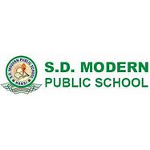
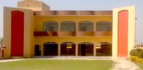
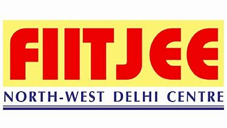

 I had taken my primary education(till 10th) from S.D.M.P.S (S.D Modern Public School) which is placed in the city Hansi,Haryana. It is CBSE affiliated and also a english medium school. This school taught me a lot I also cleared various olympiads maths and Science upto class 10th.
 As I have interest in maths from starting so I decided to take non-medical in class 11th. So,I had taken admission in Heeralal Public School, Delhi as a dummy School because if I go to school regularly then I can't give my 100% to the JEE Preperation which is my major aim to crack.
 Then, I joined FIITJEE Punjabi Bagh Center for JEE Preperation in class 11th. Also, FIITJEE is one of the best institute I think for the preperation of exam like JEE as it is generally not possible to achieve such a good rank for normal student. It is only after joining FIITJEE that I realised my true potential. It is because of FIITJEE only that I am able to crack many other exams like KVPY with 495 rank, NSEC in class 12th and JEE MAINS with 800 rank and finally JEE Advanced with rank of 329 under CRL and made me able to join one of the estemeed institute of India 'IIT Roorkee'.